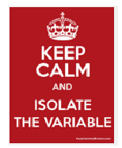

you would respond by filling in the blank: \(5 \times 12 = 60\text{.}\)
In this problem the equals sign is like a command to perform some mathematical task; it prompts you to give an answer.
An equals sign can also be used to show the result of a simplification. It says: Here is a simpler form of the same expression. Here is an example of this use of the equals sign.
we are describing the relationship between Delberts age and Francines age. Such a statement is called an equation.
Definition.
An equation is a mathematical statement that two algebraic expressions are equal.
Note2.5.1.
We can use variables to write equations. For example,
\begin{equation*}
D = F + 6
\end{equation*}
where \(D\) and \(F\) stand for Delberts age and Francines age. Finding relationships between variables and describing them as equations is an important algebraic skill.
Example2.5.2.
During a sales event, The Home Store offers $50 off the price of any sofa. Write an equation that gives the sale price, \(S\text{,}\) in terms of the regular price, \(P\text{.}\)
Solution.
The sale price is $50 less than the regular price, so to find \(S\) we subtract $50 from \(P\text{.}\)
\begin{equation*}
S = P - 50
\end{equation*}
Note2.5.3.
The instruction "Write an equation for \(\alert{S}\) in terms of \(P\)" means to start with "\(\alert{S} = \)". After the equals sign, we write an algebraic expression that involves \(P\) and describes \(S\text{.}\)
Checkpoint2.5.4.
The CEO of Luminess decided that all programmers should get a 20% raise. Write an equation that gives a programmers new salary, \(N\text{,}\) in terms of her old salary, \(S\text{.}\)
Answer.
\(N = 1.20S\)
Activity2.5.1.Equations and Variables.
Tamir and his three roommates split their weekly grocery bill equally. Fill in the table below, then answer the questions.
Grocery bill
120
140
164
220
Tamirs share
30
48
59
Explain how to find Tamirs share when you know the grocery bill.
Explain how to find the grocery bill when you know Tamirs share.
Let \(T\) stand for Tamirs share. Write an equation for \(T\) in terms of the grocery bill, \(g\text{.}\)
How can you find \(T\) if you know \(g\text{?}\)
How can you find \(g\) if you know \(T\text{?}\)
The VAT (value-added tax) in England is 18% of the price. Fill in the table below, then answer the questions. ( is the symbol for pounds.)
Price ()
6
10
14
92
VAT ()
1.08
5.76
25.20
Explain how to find the VAT share when you know the price before tax.
Explain how to find the price before tax when you know the VAT.
Let \(V\) stand for the VAT. Write an equation for \(V\) in terms of the price, \(p\text{.}\)
How can you find \(V\) if you know \(p\text{?}\)
How can you find \(p\) if you know \(V\text{?}\)
Example2.5.5.
Describe the relationship between the two variables shown in the table.
\(w\)
4
7
10
12
\(g\)
9
12
15
17
Write an equation that expresses the second variable, \(g\text{,}\) in terms of the first variable, \(w\text{.}\)
Solution.
\(g\) is 5 more than \(w\text{.}\)
\(\displaystyle g = w + 5\)
Checkpoint2.5.6.
Describe the relationship between the two variables shown in the table.
\(t\)
0.5
1
2
3
\(d\)
15
30
60
90
Write an equation that expresses the second variable, \(d\text{,}\) in terms of the first variable, \(t\text{.}\)
Answer.
\(d\) is 30 times \(t\text{.}\)
\(\displaystyle d = 30t\)
Subsection2.5.2The Solution of an Equation
An equation is a statement that two expressions are equal. An equation can be true or false. For example, the equation
To solve an equation means to find its solution (or solutions).
Some equations are easy to solve; you can see the solution just by thinking about it. For example, the equation \(x=5\) is very easy to solve; its solution is 5.
We can solve more complicated equations by transforming them into simple ones. Of course, we must do this in a way that the new equation has the same solution as the original equation.
We will use the fact that each of the four arithmetic operations has an opposite operation.
Activity2.5.2.Opposite Operations.
Choose a value for \(x\) and fill in the Example column.
Addition and subtraction are opposite operations.
Example
Start with any number.
\(x\)
Add 12 to get a new number.
\(x + 12\)
Now subtract 12 from the new number.
\(x + 12 - 12\)
You should get your original number back again.
\(x\)
You dont have to use 12 to add and subtract; any number will work.
Multiplication and division are opposite operations.
Example
Start with any number.
\(x\)
Multiply by 3 to get a new number.
\(3x\)
Now divide the new number by 3.
\(\dfrac{3x}{3}\)
You should get your original number back again.
\(x\)
Try multiplying and dividing by another number besides 3 (but not 0).
We see that subtraction "undoes" the effect of addition, and division "undoes" the effect of multiplication. Next well use opposite operations to solve an equation.
Subsection2.5.4Isolating the Variable
Consider the equation
\begin{equation*}
x - 6 = 4
\end{equation*}
You can check that the solution to this easy equation is 10. Even though you can solve the equation in your head, well use it as an example to demonstrate techniques for solving more complicated equations.

Wed like to transform the equation \(x - 6 = 4\) into the simpler equation \(x = 10\text{.}\) By undoing any operations performed on \(x\) we will isolate the variable on one side of the equals sign, with the solution on the other side.
Think of an equation as a set of scales, evenly balanced, with equal weights on each side. To maintain the balance, we must add or subtract an equal amount from each side of the scale.
Example2.5.9.
Solve the equation \(x - 6 = 4\)
Solution.
Well use the following steps.
Step 1: Ask yourself: What operation has been performed on \(x\text{?}\)
Step 2: We perform the opposite operation on both sides of the equation. The opposite operation for subtraction is addition.
\begin{align*}
x - 6 \amp = 4\\
~~\underline{+ 6} \amp \hphantom{=} \underline{+ 6} \amp \alert{\text{Add 6}}~\blert{\text{to both sides of the equation.}}\\
x \amp = 10
\end{align*}
We have isolated the variable on the left side of the equation. The solution is on the right side, namely, 10.
Note2.5.10.
It is important to perform the opposite operation on both sides of the equation! Otherwise, the two sides are no longer equal, and the "solution" we find will not make the original equation true.
To check that the solution is correct, we substitute our value for \(x\text{,}\) namely, \(\alert{10}\text{,}\) into the original equation to see whether a true statement results.
\begin{align*}
\blert{\text{Check:}} \hphantom{000} \amp \text{Does}~~ \alert{10} - 6 = 4?\\
\amp \text{Yes. The solution is correct.}
\end{align*}
It is a good idea to perform the check as part of the solution process.
To solve an equation.
Ask yourself: Which operation has been performed on the variable?
Perform the opposite operation on both sides of the equation.
Check your solution.
Checkpoint2.5.11.
Use an opposite operation to solve \(~a - 3.2 = 7.2\)
Answer.
\(a = 10.4\)
In Example 2.5.9, we solved an equation by "undoing" a subtraction. In Activity 2.5.3, note carefully how we write down the solution step in the Examples for the other three operations.
Activity2.5.3.Isolating the Variable.
Read each Example, then complete the Exercise following the Example.
\(\blert{\text{Example 1}}~~\)Solve the equation \(~4x = 32\)
Step 1: What operation has been performed on \(x\text{?}\)
\begin{equation*}
\blert{x~ \text{has been multiplied by 4.}}
\end{equation*}
Step 2: Perform the opposite operation on both sides of the equation.
\begin{align*}
\dfrac{4x}{\alert{4}} \amp = \dfrac{32}{\alert{4}} \hphantom{000000} \blert{\text{Divide both sides by 4.}}\\
x \amp = 8
\end{align*}
The solution is \(x=8\text{.}\)
Check: Does \(4(8) = 32?\) Yes. The solution is correct.
\(\blert{\text{Exercise 1}}~~\) Solve the equation \(12p = 60\)
Step 1: What operation has been performed on \(p\text{?}\)
Step 2: Perform the opposite operation on both sides of the equation.
Check:
\(\blert{\text{Example 2}}~~\)Solve the equation \(~x+8.3 = 24\)
Step 1: What operation has been performed on \(x\text{?}\)
\begin{equation*}
\blert{8.3~ \text{has been added to}~x.}
\end{equation*}
Step 2: Perform the opposite operation on both sides of the equation.
\begin{align*}
x + 8.3 \amp = 24 \hphantom{000000} \blert{\text{Subtract 8.3 from both sides.}}\\
\underline{\alert{-8.3}} \amp = \underline{\alert{-8.3}}\\
x \amp = 15.7
\end{align*}
The solution is \(x = 15.7\text{.}\)
Check: Does \(15.7 + 8.3 = 24?\) Yes. The solution is correct.
\(\blert{\text{Exercise 2}}~~\) Solve the equation \(m + 1.6 = 5.2\)
Step 1: What operation has been performed on \(m\text{?}\)
Step 2: Perform the opposite operation on both sides of the equation.
Check:
\(\blert{\text{Example 3}}~~\)Solve the equation \(~\dfrac{x}{6} = 12\)
Step 1: What operation has been performed on \(x\text{?}\)
\begin{equation*}
\blert{x~ \text{has been divided by 6.}}
\end{equation*}
Step 2: Perform the opposite operation on both sides of the equation.
\begin{align*}
\alert{6}\left(\dfrac{x}{6}\right) \amp = (12)\alert{6} \hphantom{000000} \blert{\text{Multiply both sides by 6.}}\\
x \amp = 72
\end{align*}
The solution is \(x = 72\text{.}\)
Check: Does \(\dfrac{72}{6} = 12?\) Yes. The solution is correct.
\(\blert{\text{Exercise 3}}~~\) Solve the equation \(\dfrac{S}{7} = 12\)
Step 1: What operation has been performed on \(S\text{?}\)
Step 2: Perform the opposite operation on both sides of the equation.
Check:
Note2.5.12.
Even if you can solve these equations in your head, you should still learn to write down the solution steps!
The method of isolating the variable can help us solve more complicated equations that are harder to solve mentally.
Subsection2.5.5Vocabulary
equation
solution
solve
opposite operation
isolate the variable
Exercises2.5.6Practice 2.5
Exercise Group.
For Problelms 1-4, fill in the table, and answer the questions.
1.
Rachel is eight years older than Simone.
Simones age
6
10
15
30
Rachels age
14
26
32
Explain how to find Rachels age when you know Simones age.
Explain how to find Simones age when you know Rachels age.
Let \(r\) stand for Rachels age. Write an equation for \(r\) in terms of Simones age, \(s\text{.}\)
How can you find \(r\) if you know \(s\text{?}\)
How can you find \(s\) if you know \(r\text{?}\)
2.
Farnaz deposits one-third of her paycheck into her savings account.
Paycheck ($)
30
60
120
240
Deposit ($)
10
70
100
Explain how to find Farnazs deposit when you know her paycheck.
Explain how to find Farnazs paycheck when you know her dposit.
Let \(r\) stand for Farnazs deposit. Write an equation for \(d\) in terms of her paycheck, \(p\text{.}\)
How can you find \(d\) if you know \(p\text{?}\)
How can you find \(p\) if you know \(d\text{?}\)
3.
Delberts checking account has an outstanding check (not yet received by the bank) for $76. So his actual balance is $76 less than the balance shown on his bank statement.
Bank statement ($)
100
138
188
332
Actual balance ($)
24
200
276
Explain how to find the actual balance from the bank statement.
Explain how to find the banks figure for the balance if you know the actual balance.
Let \(a\) stand for the actual balance. Write an equation for \(a\) in terms of the bank statement, \(b\text{.}\)
How can you find \(a\) if you know \(b\text{?}\)
How can you find \(b\) if you know \(a\text{?}\)
4.
Francine is traveling on an express train at 65 miles per hour.
Hours traveled
1
2
3.5
6
Miles traveled
65
325
650
Explain how to find the distance Francine traveled if you know how many hours she traveled.
Explain how to find the number of hours Francine traveled if you know how many miles she traveled.
Let \(d\) stand for the distance Francine traveled. Write an equation for \(d\) in terms of the travel time, \(t\text{.}\)
How can you find \(d\) if you know \(t\text{?}\)
How can you find \(t\) if you know \(d\text{?}\)
Exercise Group.
For Problems 5-12,
Describe the relationship between the variables.
Write an equation that expresses the second variable in terms of the first variable.
5.
\(r\)
\(q\)
25
17
21
13
16
8
10
2
6.
\(v\)
\(b\)
4
36
6
54
8
72
10
90
7.
\(h\)
\(m\)
6
2
12
4
21
7
33
11
8.
\(s\)
\(t\)
0
4
8
12
12
16
16
20
9.
\(c\)
\(k\)
1.2
1.8
1.4
2.0
2.3
2.9
2.6
3.2
10.
\(x\)
\(z\)
17.5
15
16
13.5
12.7
10.2
9.3
6.8
11.
\(a\)
\(d\)
20
15
12
9
8
6
4
3
12.
\(u\)
\(s\)
6
4
15
10
27
18
36
24
Exercise Group.
For Problems 13-14, choose the equation that best describes each situation. In each case, \(p\) represents the unknown quantity.
\(~~~~~p+8 = 40~~~~~~~~p-8 = 40~~~~~~~~8p=40\)
13.
Eight times a number is 40. What is the number?
A number decreased by 8 is 40. What is the number?
Eight less than a number is 40. What is the number?
Forty exceeds a number by 8. What is the number?
14.
Antoinette scored 8 points more than Katy scored. If Antoinette scored 40 points, how many points did Katy score?
Raul got a discount of $8 on his calculator and paid $40. How much is the regular price?
Eight tickets to the rodeo cost $40. How much does one ticket cost?
If Jayes golden retriever puppy gains 8 pounds, it will weigh 40 pounds. How much does the puppy weigh now?
Exercise Group.
For Problems 15-16, choose the equation that best describes each situation. In each case, \(b\) represents the unknown quantity.
\(~~~~~b - 18 = 10~~~~~~~~18 - b = 10\)
15.
Eighteen less than a number is 10. What is the number?
Eighteen reduced by a number is 10. What is the number?
The difference of 18 and a number is 10. What is the number?
16.
The temperature dropped 18 degrees over night, and now it is 10\(\deg\text{.}\) What was the temperatureyesterday?
Negin was enrolled in 18 units, but she dropped some classes and now she has 10 units. Homany units did she drop?
Dorrie bought an $18 video on sale for $10. What was the discount?
Exercise Group.
For Problems 17-18, choose the equation that best describes each situation. In each case, \(t\) represents the unknown quantity.
\(~~~~~16t = 80~~~~~~~~\dfrac{t}{16} = 80\)
17.
How many pounds does an 80-ounce box of laundry soap weigh?
How many ounces does an 80-pound child weigh?
18.
If Sarmila works 16 hours a week, how many weeks will it take her to complete 80 hours ofcooperative education?
Each member of the Friends of the Youth Symphony must raise $80 to keep the Symphony out of debt. If there are 16 members, how much money do they need?
Exercise Group.
For Problems 19-20, choose the equation that best describes each situation. In each case, \(n\) represents the unknown quantity.